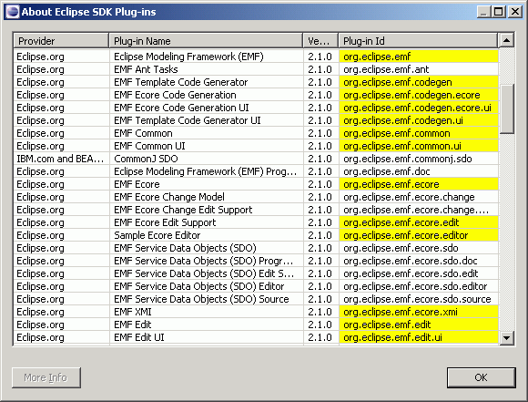
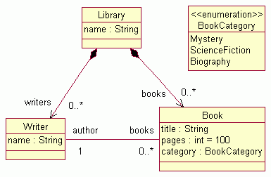

Last updated: June 18, 2007
This tutorial is a step-by-step description of the process of creating an EMF model and generating a simple model editor for it. Following this tutorial will show how easy EMF makes it to go from a simple model definition to a fully functioning editor for that model.
The model we will generate looks like this in UML (see the Eclipse Modeling Framework Overview for a description of this model):
We will show how an EMF model can be generated from either of two different sources: a Rational Rose model or a set of annotated Java interfaces and classes.
The screenshots are based on version 3.3.0 RC4 of the Eclipse SDK and version 2.3.0 RC3 of EMF.
| Step 0: | Prerequisites |
| Step 1: | Import the Model from Rose or Define the Model Using Annotated Java |
| Step 2: | Generate the EMF Model Code |
| Step 3: | Generate an Editor for the Model |
| Step 4: | Run the Generated Editor |
The EMF Runtime package includes the EMF generator and a number of related plug-ins. After installing the package, verify that they are available in your Eclipse environment:
Additional EMF plug-ins are not required for this tutorial. They may or may not appear, depending on which EMF packages you installed.
The Rose file for the library model can be found here: library.mdl. Save it somewhere on your workstation.
Create a new EMF project in the workspace:


Instead of importing the model from a Rose diagram, we can start with a set of Java interfaces and classes that correspond to the classes and enumerated types, respectively, in the library model. This code is the bare minimum required to illustrate the desired features. Based on it, an Ecore model and a generator model will be constructed, which will then drive generation of the remaining code. The code is annotated with "@model" tags in Javadoc comments, in order to specify any non-default values for the attributes and references of the Ecore objects.
Starting in EMF 2.3, you can define your annotated Java interfaces with Java 5.0 Generics and Enumerations. We will show both approaches when appropriate. In order to use Java 5.0, make sure Eclipse's "Java/Compiler/Compiler Compliance Level" value is set to "5.0" or higher.
Here are the interfaces that describe the library model:
Library.java (Java 1.4)
package org.eclipse.example.library; import java.util.List; /** * @model */ public interface Library { /** * @model */ String getName(); /** * @model type="Writer" containment="true" */ List getWriters(); /** * @model type="Book" containment="true" */ List getBooks(); }Library.java (Java 5.0)
package org.eclipse.example.library; import java.util.List; /** * @model */ public interface Library { /** * @model */ String getName(); /** * @model containment="true" */ List<Writer> getWriters(); /** * @model containment="true" */ List<Book> getBooks(); }Book.java
package org.eclipse.example.library; /** * @model */ public interface Book { /** * @model */ String getTitle(); /** * @model default="100" */ int getPages(); /** * @model */ BookCategory getCategory(); /** * @model opposite="books" */ Writer getAuthor(); }Writer.java (Java 1.4)
package org.eclipse.example.library; /** * @model */ public interface Writer { /** * @model */ String getName(); /** * @model type="Book" opposite="author" */ java.util.List getBooks(); }Writer.java (Java 5.0)
package org.eclipse.example.library; /** * @model */ public interface Writer { /** * @model */ String getName(); /** * @model opposite="author" */ java.util.List<Book> getBooks(); }BookCategory.java (Java 1.4)
package org.eclipse.example.library; /** * @model */ public class BookCategory { /** * @model name="Mystery" */ public static final int MYSTERY = 0; /** * @model name="ScienceFiction" */ public static final int SCIENCE_FICTION = 1; /** * @model name="Biography" */ public static final int BIOGRAPHY = 2; }BookCategory.java (Java 5.0)
package org.eclipse.example.library; /** * @model */ public enum BookCategory { /** * @model name="Mystery" */ MYSTERY, /** * @model name="ScienceFiction" */ SCIENCE_FICTION, /** * @model name="Biography" */ BIOGRAPHY; }
Create a new empty EMF project in the workspace:
Create the first Java interface:
Create the other two interfaces (Book.java and Writer.java) and the class (BookCategory.java) in the same way. Of course, to create the class, select "New/Class" from the pop-up menu, instead of "New/Interface".
Create the EMF model:
The generator model shows a root object, representing the whole model. This model object has children that represent its packages, whose children then represent classifiers (classes and datatypes, including enumerated types). The children of classes are class attributes, references, and operations; the children of enumerated types are enum literals.

In most cases, the properites need not be changed from their default values, but these options can provide a great deal of control over the code that gets generated. One option worth pointing out is the second one in the image above, "Compliance Level". If you chose to exploit the new constructs introduced by Java 5.0 in annotated Java interfaces, or you wish to generate code that makes use of generics, ensure this option is set to "5.0" or higher. Its initial value is based on the compiler compliance level property, which was illustrated above in Step 0.
The generator model is also the place where you initiate the code generation. By right-clicking on an object in the model, you can generate code for it.
After generation, the class interfaces and enum class will have been created (if the model was imported from Rose) or completed (if the model was defined using annotated Java), and a new pair of interfaces will have been created for the package itself and for the factory. There will also be two new packages, with "impl" and "util" suffixes, which contain implementations of the interfaces and additional utility classes, and both types of manifest files for the model plug-in: "plugin.xml" and "MANIFEST.MF".
If you defined the model by using annotated Java, you may see a warning in the Problems view: "The import java.util.List is never used". This warning is expected, and will not stop you from continuing on to the next step.
If you change the model, you can regenerate it, and changes will be merged with any hand modifications that may have been made to the code. You can also selectively generate a subset of the model code by right-clicking on a package, class, or enum object and selecting "Generate Model Code" from the pop-up menu.
A fully functional Eclipse editor can also be generated for any model. By default, it is split between two plug-ins: an "edit" plug-in includes adapters that provide a structured view and perform command-based editing of the model objects; an "editor" plug-in provides the UI for the editor and wizard.

In general, if you wish to generate the model, edit, and editor plug-ins in a single step, you can do so by selecting "Generate All" from the pop-up menu.
This will also create a tests plug-in, containing JUnit test skeletons for exercising any volatile features and operations defined in the model. This model doesn't include any, but In general, you'll need to fill in the bodies of these tests, yourself. The tests plug-in also includes a simple example class, which shows how to load and validate a model in a stand-alone application.
The code should be compiled automatically as it is generated, and should recompile whenever it is changed. If you have disabled automatic building in the workbench preferences, you can initiate compilation manually:


In order to test the new plug-ins, a second instance of Eclipse must be launched. The plug-ins will run in this workbench.


The Library Model wizard can now be used to create a new instance of the model.


The root object in this editor corresponds to the My.library resource. Under it lies a single library, the object which was selected as the model object in the wizard.